Taller solidario · Datanilo Community · 19 de noviembre de 2026GitHubrepositorio del taller
Construye tu portafolio de datos End-to-End · Databricks en Azure, con Claude como copiloto
La causa
Organiza Datanilo Community junto con otras comunidades de datos de la región. Si ya aportaste, gracias: comparte el taller con alguien que quiera armar su portafolio.
Por qué un portafolio
La pregunta que responde un buen portafolio no es «qué herramientas conoces», sino «qué harías con mis datos el primer mes».
La ruta de hoy
| Min | Bloque | Notebook | Qué queda construido |
|---|---|---|---|
| 0–32 | El método con Claude, el proyecto de referencia y los datos | — | El plan: qué adaptamos y por qué |
| 32–42 | Setup y Bronze | 00 · 01 | 4 tablas Bronze con su trazabilidad |
| 42–62 | Silver: limpieza y reglas de negocio | 02 a 05 | 4 tablas Silver confiables |
| 62–74 | Gold: modelo estrella y carga inicial | 06 · 07 | 4 dimensiones y fact_sales |
| 74–87 | Carga incremental con MERGE | 01 · 05 · 08 | Lote nuevo fusionado, sin duplicar |
| 87–102 | Optimización, dashboard y orquestación | 09 | Dashboard y job de punta a punta |
| 102–120 | Lo que falló, cómo se verificó y tu siguiente paso | — | Tu plan para replicarlo |
Son 13 tablas finales más dos temporales que usa la carga incremental. Hay dos pausas para preguntas: al terminar Silver y al terminar el MERGE.
El método
En cada bloque de la demo verás una línea «Con Claude»: qué hizo el asistente en ese paso y qué quedó en manos de la persona.
La herramienta
Las reglas viven en un archivo de texto del proyecto que el asistente lee al comenzar cada sesión. También puedes trabajar copiando y pegando en un chat: es más lento y el asistente no ve los errores por sí mismo, pero los hábitos de la lámina final aplican igual.
El reparto del trabajo
| Lo que pedí | Lo que hizo Claude | Lo que decidí o corregí |
|---|---|---|
| Estudia este repositorio y dime si sirve de referencia para un taller de 2 horas | Resumió fases y tecnologías; avisó que no trae datos y que apunta a tablas que no existen | Usarlo como base y recortar el alcance |
| No te adelantes: dime qué necesitas saber antes de construir | Tres preguntas: dónde corre, qué alcance tiene la demo y qué material se comparte | Mi suscripción de Azure, demo completa en vivo |
| Genera datos de prueba que obliguen a aplicar cada limpieza | Un generador con semilla fija: duplicados, fechas mezcladas, identificadores inválidos | Revisar que cada defecto tuviera su regla |
| Adapta los notebooks de AWS a Azure | 11 notebooks: del bucket S3 a un Volume, rutas relativas, un job que los encadena | Quitar la capa que dependía de tablas inexistentes |
| Termina los pendientes, bien validados | Encontró la causa del bloqueo, corrigió 9 defectos y comparó 50 cifras contra un cálculo aparte | Qué se muestra en vivo y qué se cuenta |
Los pedidos están resumidos; el último es literal. Ninguno es un «prompt mágico»: lo que cambia el resultado es el contexto que se entrega y la verificación que se exige después.
Vocabulario
| Término | Qué es |
|---|---|
| Tabla Delta | Una tabla guardada como archivos, con un historial de versiones: cada escritura queda registrada y se puede consultar |
| Unity Catalog | El catálogo de Databricks: organiza los datos en catálogo → esquema → tabla y controla quién accede a qué |
| Volume | Una carpeta de archivos administrada por el catálogo. Aquí llegan los CSV antes de convertirse en tablas |
| MERGE | Una sola operación que actualiza las filas que ya existen e inserta las que faltan (también se le dice upsert) |
| Modelo estrella | Una tabla central con los hechos que se miden (ventas) rodeada de tablas que los describen (cliente, producto, fecha) |
| Cluster y serverless | Dos formas de tener cómputo: una máquina que tú configuras y enciendes, o cómputo que Databricks entrega al momento |
El punto de partidaGitHubnuestra versión
| Proyecto de referencia (AWS) | Nuestra versión (Azure) | Por qué el cambio |
|---|---|---|
Archivos leídos de un bucket S3 de AWS (s3://…) | Archivos en un Volume de Unity Catalog | El acceso lo gobierna el catálogo, sin credenciales en los notebooks |
| Datos en un S3 privado, no incluidos | Datos sintéticos con un generador propio | Cualquiera puede reproducirlo desde cero |
| Un paso final que escribe en tablas de una «empresa matriz» que el repo no incluye | Eliminado: el modelo es autocontenido | Un portafolio debe poder ejecutarse completo |
| La validación de datos figura como trabajo futuro | Validación contra un cálculo independiente | Para poder afirmar que los números son correctos |
Adaptar un proyecto existente y explicar cada diferencia es lo que harás al llegar a un equipo con código heredado.
La arquitectura
Catálogo fmcg con los esquemas bronze, silver, gold y landing. El caso: una distribuidora de alimentos saludables con clientes, productos, lista de precios mensual y órdenes. Las ciudades (Bengaluru, Hyderabad, Nueva Delhi) vienen del proyecto de referencia, que es de la India.
Los datosGitHubgen_data.pyCSV
| Fuente | Filas | Qué trae mal | Dónde se resuelve |
|---|---|---|---|
customers | 196 | 12 duplicados, nombres con espacios y minúsculas, 11 variantes de ciudad mal escritas, ciudades vacías | notebook 02 |
products | 66 | 6 duplicados, categorías en minúscula, «Protien» por «Protein», 12 identificadores no numéricos | notebook 03 |
gross_price | 312 | Mes en 4 formatos de fecha distintos, 24 combinaciones producto-mes con dos precios | notebook 04 |
orders | 5.050 | 293 sin cantidad, 256 con cliente inválido, fechas en 4 formatos (1.219 con el día de la semana delante), 50 filas repetidas | notebook 05 |
orders incremental | 330 | Lo mismo, más 20 correcciones de cantidad sobre órdenes que ya existen | notebooks 01, 05 y 08 |
El generador (data/gen_data.py) usa una semilla fija: siempre produce los mismos archivos, y por eso los resultados se pueden comprobar.
El proyecto en el workspaceGitHubnotebooks/
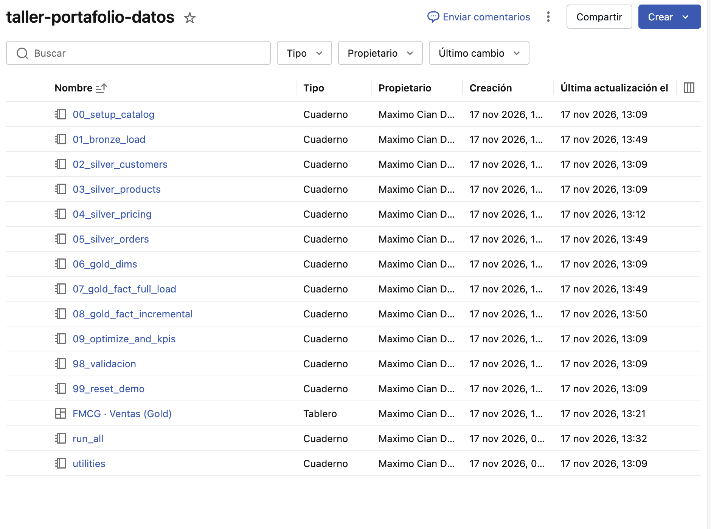
00 prepara el catálogo, 01 a 09 construyen las capasutilities guarda los nombres compartidos; todos lo cargan con %run98 valida, 99 deja todo en cero y run_all lo ejecuta completoDónde están los datosGitHubCSV
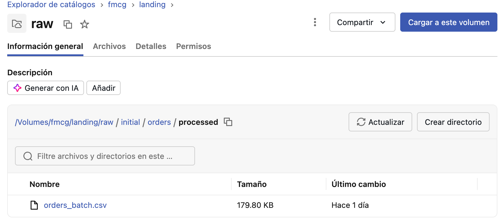
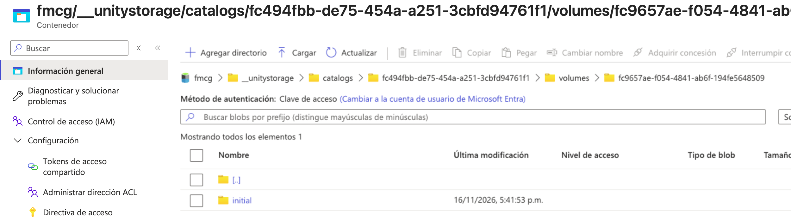
A la izquierda, el Volume en Databricks; a la derecha, el mismo almacenamiento en el portal de Azure. Unity Catalog administra las rutas: por eso en Azure se ven identificadores largos. El archivo está en processed/ porque Bronze ya lo cargó.
Demo · notebooks 00 y 01GitHub0001
df = (spark.read.format("csv")
.option("header", True)
.option("inferSchema", True)
.load(landing_path)
.withColumn("read_timestamp", F.current_timestamp())
.select("*", "_metadata.file_name",
"_metadata.file_size"))
df.write.format("delta") \
.option("delta.enableChangeDataFeed", "true") \
.mode("overwrite").saveAsTable(bronze_table)_metadata da la trazabilidad sin escribir código extralanding/ a processed/: la siguiente corrida solo ve lo nuevoCon Claude: cambió las rutas del bucket por las del Volume y agregó el control de «sin archivos nuevos». delta.enableChangeDataFeed deja la tabla lista para que otro proceso lea solo los cambios.
Demo · notebooks 02 a 04GitHub020304
| Tabla | Bronze | Silver | Qué se aplicó |
|---|---|---|---|
customers | 196 | 184 | Sin duplicados; ciudades corregidas con diccionario y lista permitida; 4 ciudades confirmadas por negocio; 15 quedan como «Sin ciudad» |
products | 66 | 60 | Categoría y nombre normalizados; división comercial derivada; product_code con SHA-256; identificadores inválidos → 999999 |
gross_price | 312 | 288 | Mes convertido a fecha; un solo precio por producto y mes (se conserva el más alto) |
Con Claude: adaptó las transformaciones y agregó los conteos de control. Qué hacer con un dato malo (corregirlo, marcarlo o descartarlo) lo decide negocio; en el portafolio, cada regla debe poder explicarse en una frase. product_code es una huella del nombre: el mismo producto recibe siempre el mismo código.
Demo · notebook 02GitHub02
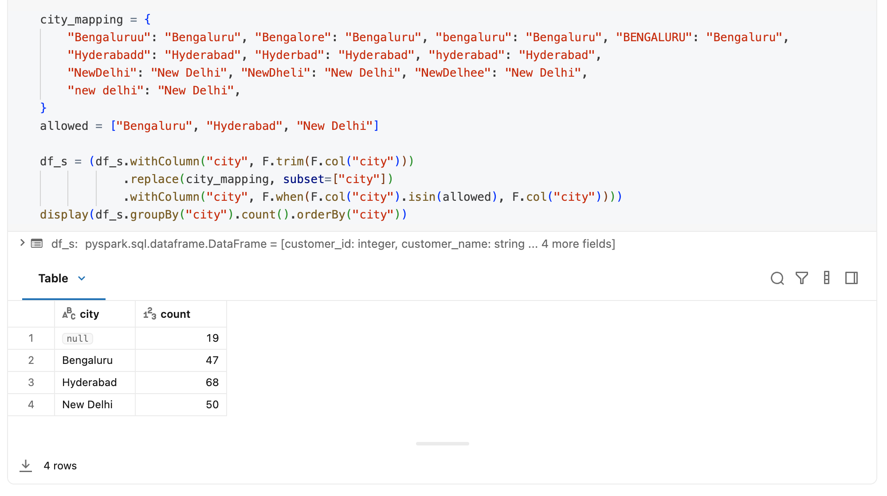
Demo · notebook 05GitHub05
# "Sunday, March 08, 2026" -> "March 08, 2026"
df = df.withColumn("order_placement_date",
F.regexp_replace("order_placement_date",
r"^[A-Za-z]+,\s*", ""))
# cuatro formatos: gana el primero que parsea
df = df.withColumn("order_placement_date",
F.coalesce(
to_date_safe("order_placement_date", "yyyy/MM/dd"),
to_date_safe("order_placement_date", "dd-MM-yyyy"),
to_date_safe("order_placement_date", "dd/MM/yyyy"),
to_date_safe("order_placement_date", "MMMM dd, yyyy")))| Paso | Filas |
|---|---|
| Llegan de Bronze | 5.050 |
| Sin cantidad nula | 4.757 |
| Sin duplicados | 4.709 |
| Con producto válido | 4.511 |
De las órdenes que siguen en pie, 241 tienen cliente inválido: se conservan, marcadas con el cliente 999999. Las 198 órdenes cuyo producto no existe en el maestro se descartan, porque no hay cómo ponerles precio. Con Claude: mantuvo la regla del proyecto de referencia (marcar, no borrar) y agregó el conteo de cada paso.
Demo · notebook 06GitHub06
999999 «Cliente desconocido».185 filasfact_sales: una fila por línea de orden, con cantidad, precio y revenue = quantity × price.
El calendario cubre fechas que todavía no tienen ventas, y existe un cliente «desconocido» para que ninguna venta quede sin su dimensión. Comprobado: ninguna venta apunta a un cliente, producto o fecha que no exista. Con Claude: al revisar los cruces detectó que las ventas con cliente inválido quedaban sin dimensión y propuso el cliente «desconocido».
Demo · notebook 07GitHub07
fact_salesSELECT o.order_id, o.order_placement_date AS date, o.customer_id AS customer_code,
o.product_code, o.product_id, o.order_qty AS quantity, p.price,
round(o.order_qty * p.price, 2) AS revenue
FROM fmcg.silver.orders o
LEFT JOIN fmcg.gold.dim_pricing p
ON o.product_id = p.product_id
AND trunc(o.order_placement_date, 'MM') = p.price_monthEl precio se busca por producto y por mes de la orden. Todas las líneas encontraron precio: 0 nulos.
El catálogo
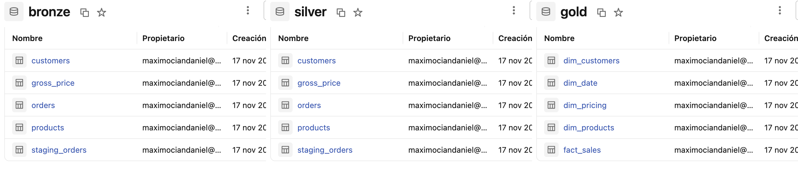
Captura tomada al final del pipeline: staging_orders aparece en Bronze y en Silver porque es la tabla de paso del lote incremental. Sin esas dos, son las 13 tablas del proyecto.
Demo · notebook 08GitHub08
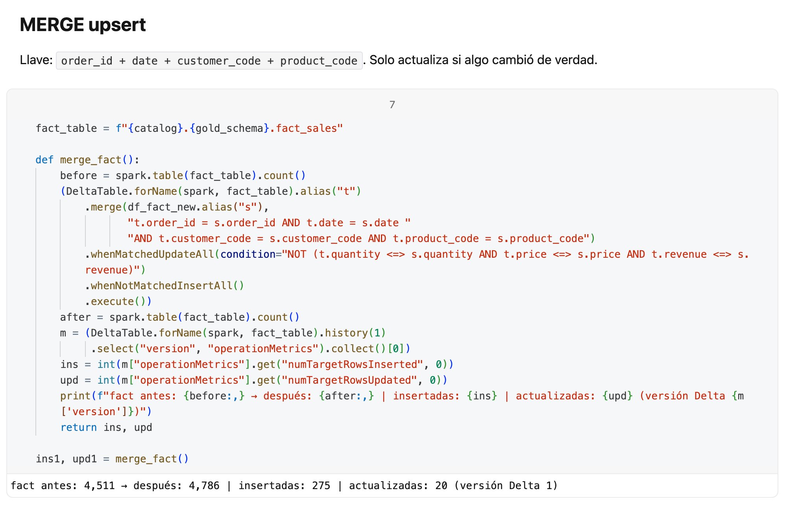
| Lote incremental | Filas |
|---|---|
| Llegan en el archivo | 330 |
| Válidas después de Silver | 295 |
| Insertadas (órdenes nuevas) | 275 |
| Actualizadas (cantidad corregida) | 20 |
fact_sales después | 4.511 → 4.786 |
Las cuatro columnas de la condición identifican una venta: si coinciden, es la misma fila. <=> compara dos valores tratando a NULL como un valor más; con eso solo se reescriben las filas que cambiaron. Con Claude: agregó esa condición al preparar la prueba de la segunda corrida.
Demo · notebook 08GitHub08
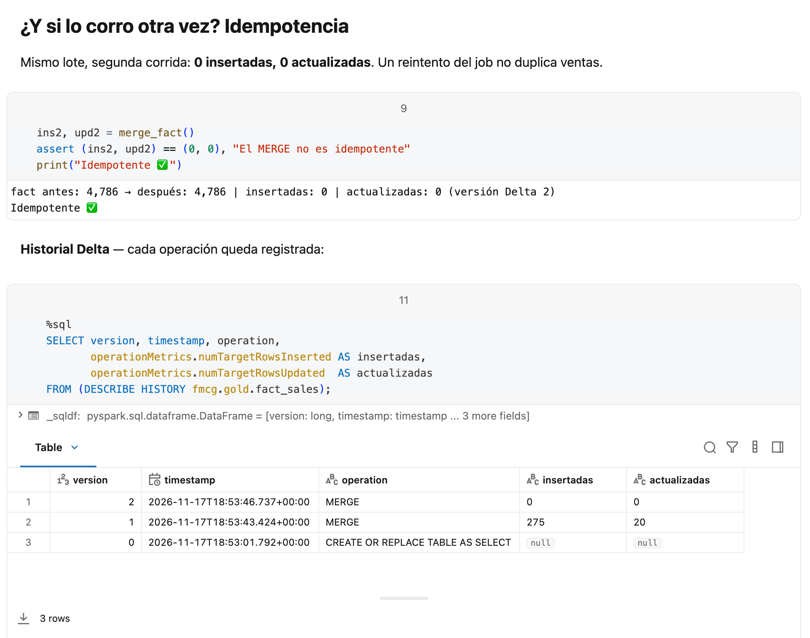
processed/ y no vuelve a entrarSi alguien te pregunta en una entrevista qué pasa si tu pipeline corre dos veces, esta es la demostración.
Demo · notebook 09GitHub09
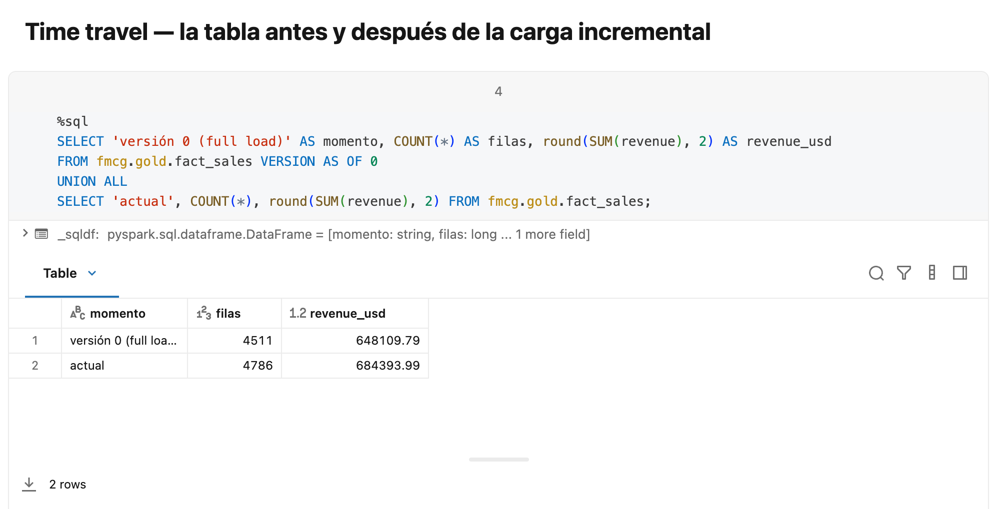
OPTIMIZE junta archivos pequeños; ZORDER los ordena por la columna que más se filtra08, dice qué operación la creó y cuántas filas tocóLinaje
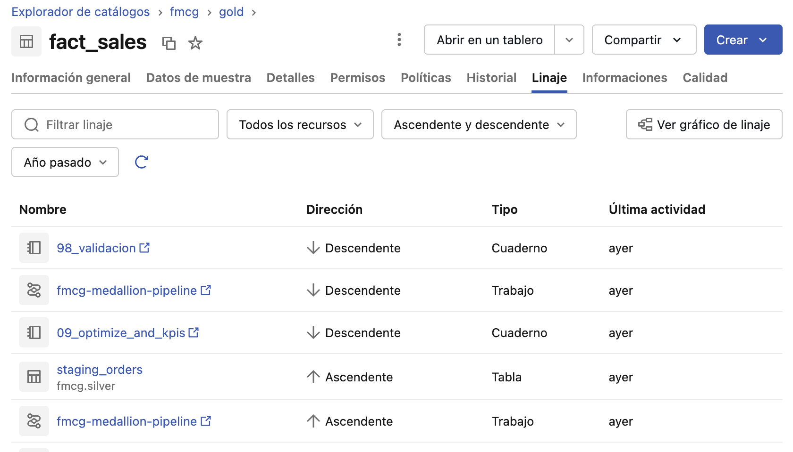
fact_salesDemo · dashboardGitHub09
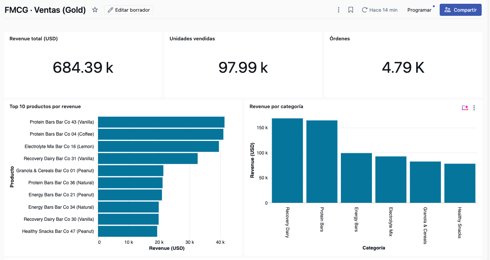
09; Claude armó el dashboard a partir de ellasOrquestaciónGitHubnotebooks/
| Etapa | Tareas del job | Notebook |
|---|---|---|
| Setup | t00_setup | 00_setup_catalog |
| Bronze | t01_customers · t01_products · t01_pricing · t01_orders | 01_bronze_load con 4 parámetros |
| Silver | t02 · t03 · t04 · t05_orders | 02 a 05 |
| Gold | t06_dims · t07_fact_full | 06 · 07 |
| Incremental | t01_orders_incr · t05_orders_incr · t08_fact_incr | 01 · 05 · 08 |
| Cierre | t09_optimize · t98_validacion | 09 · 98 |
Tiempos medidos el 17 de noviembre: 3 min 34 s en un cluster de nodo único (Standard_D4ds_v7, 4 núcleos) y unos 8 min en serverless, incluido el reset. Con 99_reset_demo todo vuelve al punto de partida para ensayar otra vez.
Orquestación
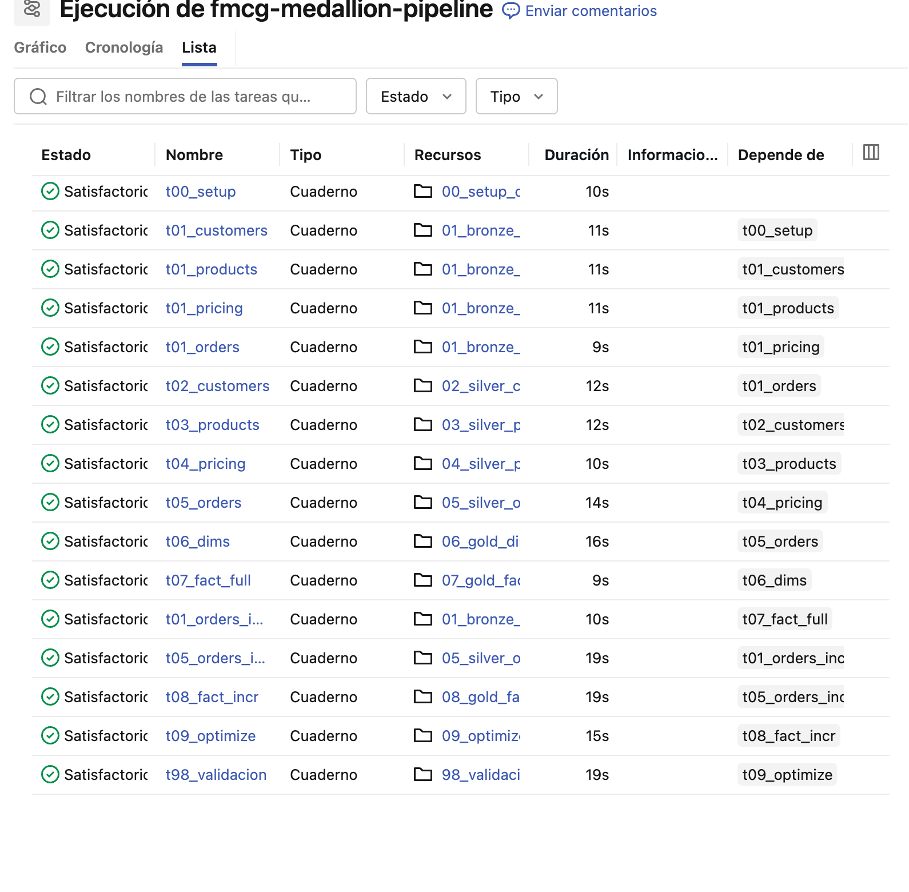
Lo que falló
| Síntoma | Primera hipótesis | Causa real | Cómo se encontró |
|---|---|---|---|
| Las tareas de Bronze quedaban «en ejecución» durante horas sin escribir nada | Falta de capacidad en la región de Azure (hubo faltantes reales, pero no causaban el cuelgue) | La máquina se creó sin máquinas auxiliares y sin activar el modo «nodo único»: arrancaba, pero sin nada que ejecutara el trabajo | Leyendo la configuración del cluster, no reintentando |
| Silver fallaba al convertir fechas | — | La función usada no existe en esa versión de PySpark | El error lo decía; se cambió por una equivalente |
| Riesgo de ventas duplicadas | — | 24 combinaciones producto-mes con dos precios | Revisando los datos antes de hacer el join |
| La demostración de idempotencia no se podía repetir | — | El notebook borraba la tabla intermedia al terminar | Ejecutando la demo completa dos veces |
La primera hipótesis sobre el cluster también la propuso el asistente, parecía razonable y era falsa: costó una madrugada de reintentos. Antes de reintentar, pide la evidencia que distingue una causa de otra.
VerificaciónGitHub98oraculo.pyesperado.json
qa/oraculo.py)98_validacion extrae las cifras reales de las tablasrun_allPedirle al asistente que escriba la verificación por un camino distinto al del pipeline es una de las mejores formas de usarlo.
Trabajar con Claude
Para repetirloGitHubrepositorioguía paso a paso
data/gen_data.py y súbelos al Volume.5 archivos, menos de 1 MBnotebooks/ y ejecútalos en el orden de la guía: el lote incremental repite 01 y 05 antes del 08.O usa run_all, que hace todoEl taller corre en un workspace Premium de Azure Databricks creado con la prueba gratuita de Azure (Azure Free Trial): ahí se probó todo, en DBR 16.4 y en serverless. El material (notebooks, datos, verificación y una guía paso a paso) está en github.com/manuel-arguelles-ai/fmcg-medallion-lakehouse-azure.
Tu siguiente pasoGitHubrepositorio
Manuel Argüelles · linkedin.com/in/manuel-arguelles-ai · analizodatos.com
Gracias por sumarte a la Navidad de los niños de Carabayllo. Aporte solidario: Yape 967 048 578 (Junior Candela) · paypal.me/leandrojt